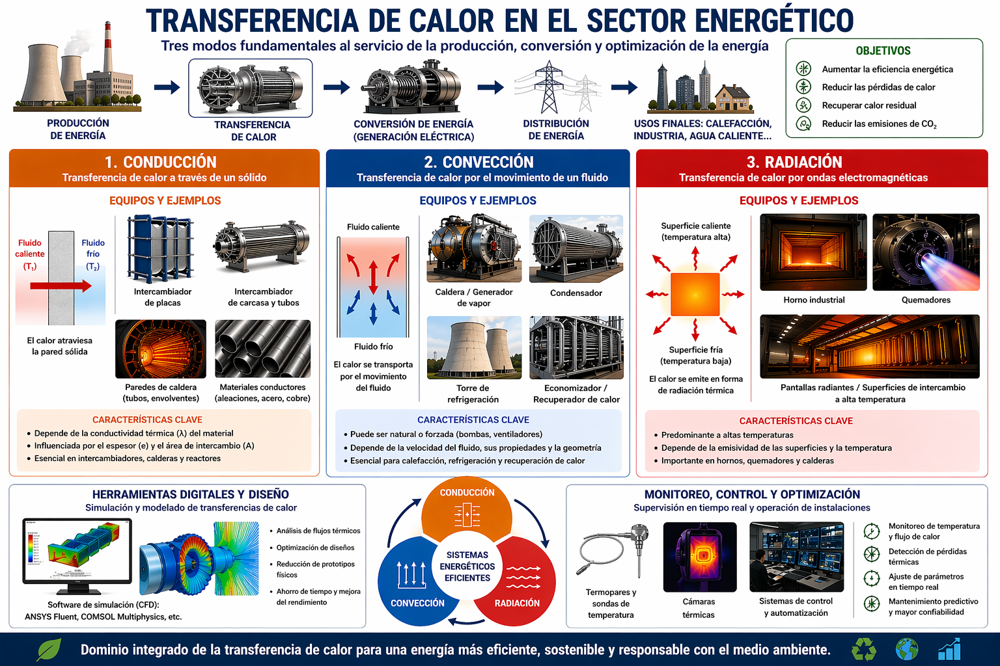

En el sector energético, la transferencia de calor constituye un pilar esencial para la producción y optimización de la energía. Se basa en tres modos fundamentales — conducción, convección y radiación — y cada categoría implica equipos específicos adaptados a estos mecanismos.
Definición: transferencia de calor a través de un material sólido.
En este campo, los equipos clave incluyen los intercambiadores de calor de placas o tubulares, donde el calor atraviesa paredes metálicas conductoras entre dos fluidos. Los materiales conductores (como aleaciones metálicas utilizadas en calderas o reactores) están optimizados para maximizar este intercambio. El rendimiento depende fuertemente de la conductividad térmica y del espesor de las paredes.
Definición: transferencia de calor mediante el movimiento de un fluido (líquido o gas).
Los sistemas asociados incluyen calderas, generadores de vapor, condensadores y torres de refrigeración. Estos dispositivos aprovechan la circulación de los fluidos mediante convección natural o forzada (bombas, ventiladores). Los sistemas de recuperación de calor, como los economizadores, también utilizan este principio para recuperar energía de los gases calientes.
Definición: transferencia de energía mediante ondas electromagnéticas.
Los equipos asociados incluyen hornos industriales, quemadores y superficies de intercambio diseñadas para maximizar la absorción o emisión de radiación. Este modo se vuelve dominante a altas temperaturas, especialmente en centrales térmicas y procesos industriales intensivos.
Herramientas como ANSYS Fluent o COMSOL Multiphysics permiten modelar y simular los tres modos de transferencia de calor para optimizar el diseño de las instalaciones y mejorar el rendimiento energético.
Sensores como termopares y cámaras térmicas permiten un seguimiento en tiempo real de los sistemas. Combinados con sistemas de control automatizados, ayudan a optimizar la eficiencia energética global, reducir pérdidas y minimizar el impacto ambiental.